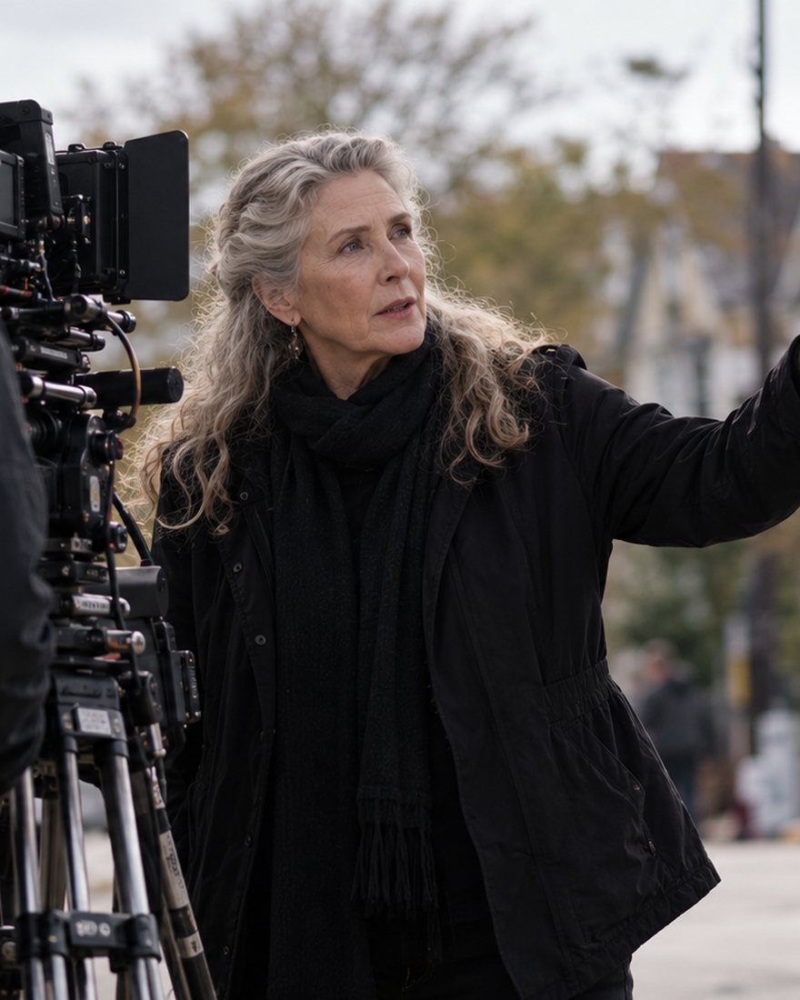
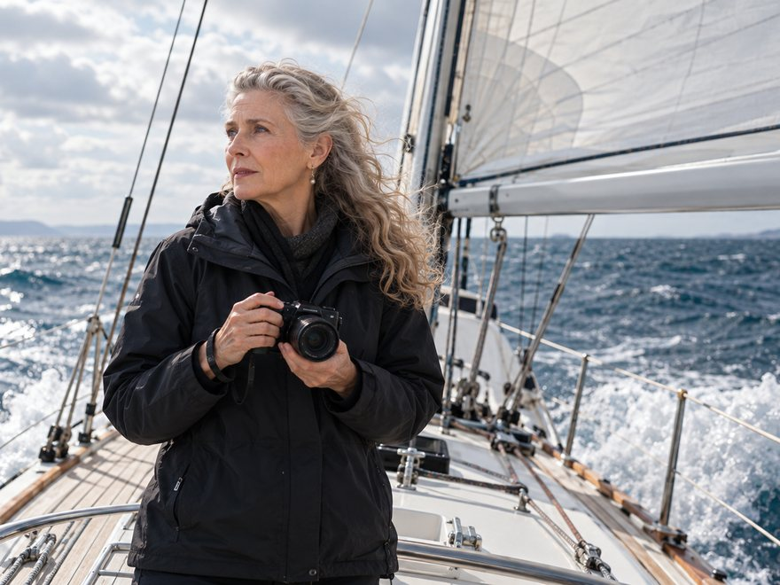
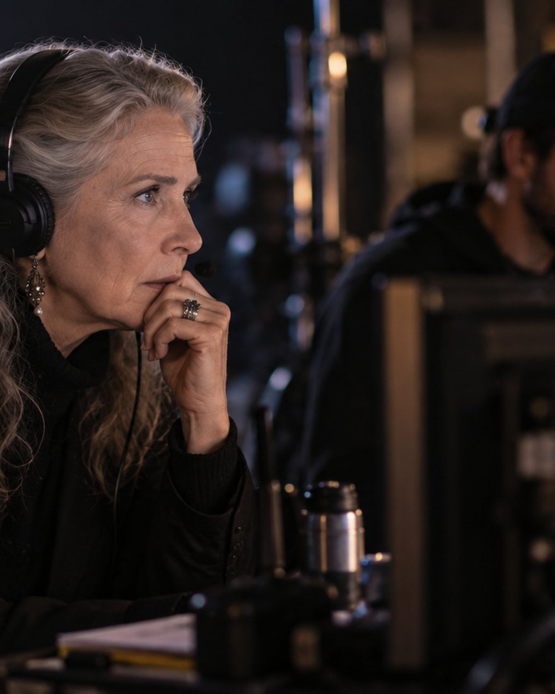
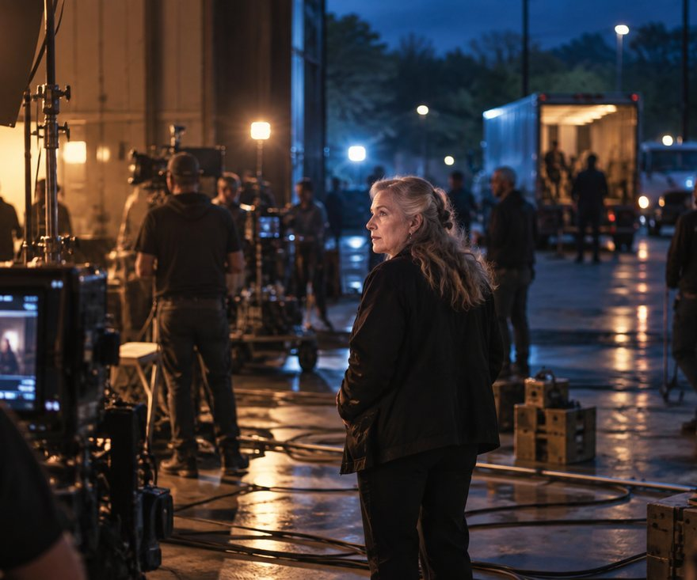

Television · ABC · 2022
The Rookie, episode 514
She directed "Death Sentence", episode 514 of The Rookie, for ABC.
Film and Television Director
Four decades on sets: first as a singer and actress, then as a script supervisor beside directors like Sidney Lumet and Rob Reiner, and now in the chair herself.
About Faye
Faye Ann Brenner began her career as a singer and an actress, trained as a script supervisor, and spent years at the elbow of directors before taking the chair. Over four decades in the industry she has worked with Sidney Lumet, Rob Reiner, Ivan Reitman, Phillip Noyce and Jerry Zucker.
She directs film and television, and runs Sweet Motif Prods. In 2022 she directed episode 514 of The Rookie for ABC, "Death Sentence". Her first film as writer and director, the short Promises, was made at 68 and went on to win awards.
She is in post production on a documentary, working title Charting New Courses, about women who sail.
Work

Television · ABC · 2022
She directed "Death Sentence", episode 514 of The Rookie, for ABC.
Short film · writer and director
Her first film as both writer and director, made at 68 and an award winner.

Documentary · in post production
A documentary about women who sail, currently in post production under that working title.
Craft
Years of script supervision taught her continuity, coverage and how a set really runs, which is the grounding she brings to directing.

Path
She started in performance, with a Bachelor of Music in vocal arts from the University of Southern California.
Trained as a script supervisor and worked alongside Sidney Lumet, Rob Reiner, Ivan Reitman, Phillip Noyce and Jerry Zucker.
Directing film and television, including The Rookie for ABC, her own short film Promises, and a documentary in post production.
Gallery

Every picture of Faye Ann Brenner on this page is an AI-generated illustration, produced with her approval from a reference photograph. They are not photographs of real productions or events.
Contact
Send a note about a script, a production or a conversation, and Faye will reply by email.